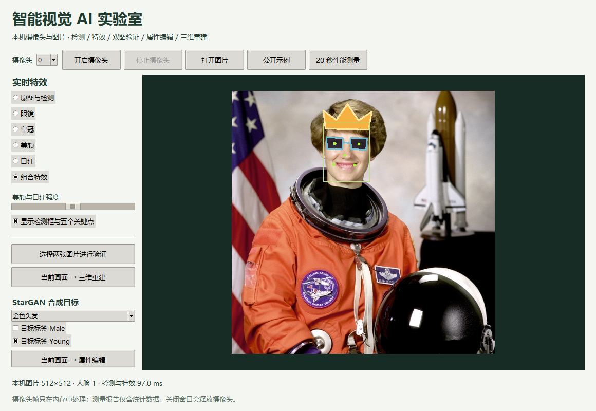
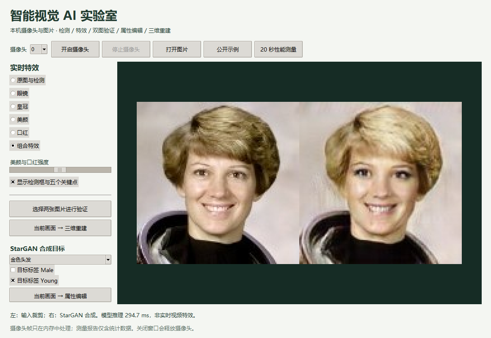

日期：2026-09-26—27。项目仓库：GBHLKYEric/InternshipProgram-FacialRecognitionandSpecialEffectsTechnology。本报告针对用户提供的人脸识别与特效项目要求，区分已经运行的功能、训练代码检查和未完成的科研验收。
最终交付是可直接调用本机摄像头的 Tkinter 原生桌面程序，统一提供六种显示效果、两图验证、StarGAN 属性编辑与原生 OpenGL 三维窗口。公开示例已经完成实际控件与模型集成验收，真人摄像头完成两轮 20 秒测量及停止、重开、退出释放检查。所有源代码另存桌面文件夹并逐文件校验，公开仓库、完整代码汇编、主教程、继续实验教程与桌面教程同步交付。
已补成的实验包括 Anaconda 实际安装、独立 Intel XPU 训练环境、完整 CelebA 下载与属性统计、真实 StarGAN 有限微调及匹配协议 FID/IS、StarGAN ONNX 部署、完整 WIDER 预训练验证及独立交叉检查、BytePS/ByteNN 概念模拟和火山引擎官方样例体验。完整 WIDER 一轮迁移训练尚在运行，完成后单独纳入实测报告。
尚不能宣称 PDF 全部科研要求完成。300-W/COFW 的真实关键点训练与 NME、指定 MS-Celeb-1M 训练、自训 ArcFace 超过 98.5% 和真实移动端性能仍未通过。预训练 SFace 的 98.9333%属于指定基线；StarGAN 属于从作者预训练模型继续的有限微调，不能归为从零全量论文复现。详见逐条矩阵。
桌面主线程创建 Tk 控件，后台线程独占摄像头与 Vision 模型，命令队列传递操作，容量为 1 的结果队列保留最新完成帧。摄像头通过 OpenCV VideoCapture 直接读取，结果用 Pillow ImageTk 展示，不经过浏览器或 HTTP。YuNet 输出框与五点；SFace 完成对齐与特征提取；余弦相似度配阈值构成两图验证。贴纸按关键点定位，美颜与口红在局部区域合成。
StarGAN 按钮暂停摄像头，把当前图像的人脸裁剪为 128×128，输入五个目标标签，以 ONNX Runtime 生成属性编辑图；界面并排显示输入与结果。三维按钮同样处理一个静态画面，经 3DDFA 重建后启动独立 spawn 进程，用 pyglet 与 OpenGL 绘制全部 76,073 个三角面。鼠标拖动、左右键、Home 与 Esc 分别完成旋转、步进、归零和关闭。正常操作不自动保存摄像头帧或人脸几何。
app.py 中的回环 HTTP 服务保留为辅助教学版本，与桌面程序共用 Vision。第三方权重按来源与哈希管理，模型/数据/依赖许可与本项目原创代码的 MIT 许可分别列明。
研究代码涵盖ResNet50+ArcFace、P-K与batch-hard、WIDER转COCO及MMDetection配置、68点回归/NME/对齐、条件GAN训练、FID/IS入口、动态Linear量化与ONNX。随机张量smoke只说明前后向和数值路径能执行，不能证明模型学到了身份或属性。
三维路径为输入图像→人脸框→3DDFA_V2 MobileNet回归62参数→形状/表情基底组合→38365顶点/76073三角面→OBJ、多视角与原生OpenGL查看器；早期WebGL查看器作为辅助版本保留。它是输入相关统计重建，尺度任意；无配对三维真值，不给出毫米精度。
reports/desktop-integration.json记录最终界面的实际检查：六种效果、同图验证、StarGAN 生成、三维按钮打开独立原生窗口、GPU实际绘制76,073面、35°旋转后回执、子进程正常退出。该次集成检查不重新打开摄像头，避免覆盖已保存的真实两轮摄像头测量。
| 观测 | 首轮原生摄像头 | 第二轮原生摄像头 |
|---|---|---|
| 分辨率与效果 | 640×480、组合特效 | 640×480、组合特效 |
| 测量时长 | 20.0601秒 | 20.0267秒 |
| 提交到Tk的帧数 | 149 | 316 |
| 提交帧率 | 7.4277 FPS | 15.7790 FPS |
| 检出人脸帧数 | 149 | 49 |
| 整体延迟中位 / P95 | 136.4935 / 159.3555 ms | 43.5976 / 168.6882 ms |
计时包含读取、检测/特效、队列等待到 Tk PhotoImage赋值；不包含传感器曝光年龄或屏幕物理发光时刻。第二轮267帧未检出人脸，其耗时中位40.5979ms；49帧检出人脸的耗时中位161.4576ms。画面组成与后台训练负载不同，不能把整体FPS差异解释成优化收益，也不能称检测准确率。两个原始文件为desktop-camera-first.json与desktop-camera.json，相应*-validation.json独立复算帧数、FPS、中位数和P95并全部通过。
原生程序演示视频为1200×900、H.264/yuv420p、216帧、5FPS播放、43.2秒。内容来自真实Tk控件操作及显式请求的原生OpenGL帧缓冲，输入仅公开NASA示例，没有打开摄像头。采集落后时在5FPS时间网格重复上一帧，不把播放速度当作算法吞吐量；记录在reports/desktop-video.json。早期18秒仿射样图视频另保留。

Anaconda 2026.07-1 已完成官方 SHA256、Authenticode 签名核验和用户明确同意条款后的安装。conda为26.5.3，base Python为3.14.6，项目独立环境为Python3.12.14。实际检查了PyTorch反向传播、YuNet推理、Tk/ImageTk窗口生命周期、Jupyter指定内核运行以及pip check。安装使用Documents/Codex/work下真实物理短路径，任务work内提供目录联接；没有设置默认Python或持久PATH，没有修改长路径注册表。
独立XPU环境为PyTorch2.14.0+xpu/torchvision0.29.0+xpu，实际通过Intel Arc130T张量、NMS、WGAN-GP二阶反向传播与Adam更新。完整StarGAN生成器batch2、128×128、FP32的同步前向微测中位数为XPU23.6644ms、CPU350.6754ms；仅3次重复、固定形状，不外推训练全流程或所有模型。设备报告16GiB是共享内存视角，不是独立显存容量。
原生OpenGL4.6、24位深度缓冲实际创建成功；GL_PRIMITIVES_GENERATED查询为76,073，顶点数38,365。0°、+35°、−35°均实际渲染；+35°相对0°有43.8118%的像素改变超过5个灰度，回0°与初始图逐像素一致。报告为reports/3d-native/report.json。这验证渲染与旋转，不验证重建精度、真实尺度或摄像头FPS。
完整CelebA配套ZIP来自StarGAN作者下载脚本，202,599个图像文件名与40属性表对应；图像按实验名单提取，逐文件校验实际用到的样本。全量标签计数由reports/celeba-expanded-data.json与celeba-distribution.svg记录。标签可以同时为真，比例不能相加当作互斥类别分布，也不能外推现实人口比例。
微调从作者128×128预训练G/D开始，最终checkpoint实际继承1,200次D与240次G更新。三段保留D更新为200、500、500，配置池为512、4096、4096张，实际抽样次数为400、1000、1000；总去重图像数未知，不写成训练已遍历4096张。第二段中断前有至少150次已记录但未保存的更新，未计入最终模型；恢复了两模型与Adam状态，最后一段seed43重新排列，不称逐位恢复。
前200步采用早期教学损失归一化，后1000步对齐官方BCE sum/batch与patch输出求和的梯度惩罚。推理发现直接eval()使用过时InstanceNorm运行统计会产生颜色/棋盘异常，修正为与作者测试路径一致的逐图统计；无效图格留本地历史，不纳入指标。
| 模型 | FID | IS均值 ± 十分块标准差 |
|---|---|---|
| 作者预训练，匹配XPU构建 | 41.272788 | 3.088072 ± 0.253799 |
| 有限微调checkpoint | 40.980400 | 3.098037 ± 0.170242 |
两组使用完全相同的768源图、768真实参考，文件名交集为0；属性目标取对应参考图的五标签。生成均在同一XPU构建，指标均在该构建的CPU上计算；torch-fidelity0.4.0、InceptionV3兼容特征、FID2048维、IS10分块、seed2020、batch16/2线程。IS分块标准差不是统计显著性的置信区间。小样本FID变化−0.292388与IS变化+0.009965不足以证明显著提升；按图片拆分不保证身份无交集，作者checkpoint历史训练数据未独立审计。最初CPU-before作为历史文件保留，不与XPU-after拼成最终主比较。
最终checkpoint SHA256为784bc74917501eb6b6642300875d70217da0861dc6cb1cb264052b0a8a270cbb。ONNX固定输入为images[1,3,128,128]和attributes[1,5]，输出edited，五标签为Black_Hair、Blond_Hair、Brown_Hair、Male、Young。真实输入下PyTorch与ORT最大绝对误差1.97×10⁻⁶，checker与allclose通过；CPU2线程五次推理中位281.333ms，后台有训练。原生桌面实际按钮已展示输入与编辑结果，不称实时视频GAN。

完整WIDER训练12,880张、验证3,226张已经安全解压与校验。COCO训练有效框156,994个、验证39,112个；官方难度评估按原始MAT的easy/medium/hard目标而非COCO框数进行。预训练YuNet在全部3226张、原始分辨率、单尺度、无翻转、分数0.3/NMS0.45条件下得到AP 0.8844221 / 0.8656839 / 0.7504021，与固定源码哈希的OpenCV Zoo参考计算差均为0。31张零检测图保留为空。这里实际运行官方协议的Python实现，没有运行MATLAB或提交官方榜单。
完整RetinaNet迁移训练的设置与最终结果在继续实验第6节及WIDER报告中另列，不能把上述YuNet成绩归给自训模型。训练中途System事件ID506/507确认合盖进入并退出新型待机，约90分33.912秒；醒来同一容器继续。内部perf_counter不完整覆盖这段待机，不能当作日历等待时长。一次性SYSTEM_REQUIRED请求只防自动闲置休眠，尊重用户合盖等操作，结束后释放。
BytePS概念实验用两个真实工作进程按3/8、5/8加权聚合5次SGD更新，与单进程全批参考最大差4.47×10⁻⁸。ByteNN概念实验以同一ONNX关闭/开启ORT图优化比较，batch1中位34.3693→25.2712ms、batch8为253.4583→175.5968ms，数值检查通过。两者均准确标为模拟，没有内部SDK或移动端部署。火山引擎只体验官方人像融合内置样例，未上传个人图像、未开通计费或配置鉴权API。
300-W需要真实登记信息；COFW彩色/灰度官方传输多次中断，灰度最终仅293,760/178,022,021字节且MD5不符，普通续传失败。未使用残缺数据，未报告NME。MS-Celeb-1M的合法可核验训练包仍缺失。真实替代ArcFace训练与完整LFW结果保留在下一节，未达到98.5%。真实移动端和鉴权云API没有资源可实测，不能以桌面、官方样例或响应式网页替代。
| 项目 | 实际结果 | 必须一起阅读的边界 |
|---|---|---|
| 演示视频 | 360帧，20 FPS播放，18秒，360帧均检测到脸 | NASA公开样图做仿射动画，不是真人摄像头录像 |
| 检测+特效计时 | 中位17.935ms，P95 62.103ms，平均吞吐约38.78 FPS | 不含编解码、浏览器传输/显示；不能据此保证端到端实时或手机表现 |
| LFW本地数据统计 | 13233图、5749身份；每身份中位1图、最多530图；4069个身份仅有1张图 | scripts/analyze_lfw.py按实际路径计数，输出JSON与SVG；数量不证明标签正确、授权或人口分布平衡 |
| LFW预训练SFace初次基线 | 6000对、十折，保守端到端正确率72.25%，折间标准差2.073个百分点 | 所有失败pairs计错；不是条件于成功检测的识别准确率；不是自训ArcFace |
| LFW处理失败 | 7701张相关图，1175失败；1633 pairs受影响 | 多框/未检出等原因逐图保存；未删样本提高成绩 |
| LFW第二次选脸实验 | 固定最大面积人脸、并列时离中心最近；98.9333%，折间标准差0.38873个百分点；7701张相关图全部成功 | reports/lfw-sface-largest.json；首轮错误分析后改了预处理，属于第二次基准实验，不能称未触碰测试集的最终认证；不是自训ArcFace |
| 第二次低FAR点 | 训练折目标FAR=0.001；测试平均FAR=0.001、TAR=97.7667% | 仍受6000对协议下低FAR统计分辨率限制 |
| LFW阈值协议 | 每个测试折的阈值仅用其余训练折选取 | 未独立审计预训练模型训练身份是否与LFW重叠 |
| LFW低FAR点 | 训练折目标FAR=0.001；测试折平均FAR=0.001，平均TAR约70.867% | 300个负对/折的分辨率有限，不能外推极低FAR |
| 三维 | 38365顶点、76073面、62参数；当前保存运行参数回归约4.34ms | 时间只含回归，不是加载+全重建+渲染总耗时 |
| 三维交互渲染 | WebGL页面实际渲染并旋转35°，截图 reports/3d/viewer-screenshot.png |
是浏览器OpenGL ES路径；不宣称已安装PyTorch3D；与Chrome插件连接状态分开记录 |
| 研究smoke | ResNet/ArcFace、P-K、triplet、68点、G/D及梯度惩罚通过 | 随机权重/张量，无任务准确率 |
| ArcFace真实训练pilot | 52个与官方pairs身份无交集的LFW身份、133张真实图；随机初始化ResNet50，3epoch的loss40.111934→36.924611→36.125987 | 128维，P4/K2、SGD lr0.01、triplet权重0.1；margin分类训练准确率仍0；不是MS-Celeb-1M训练、也不代表收敛 |
| 自训ArcFace完整LFW | FP32为52.6667%±0.97468个百分点，动态Linear INT8为53.0167%±1.60632个百分点；两者6000对、7701图、零失败 | 两个模型分别只用训练折校准阈值；均未达到98.5%，0.35个百分点差异不能作为量化显著提高准确率的证据 |
| MMDetection真实训练pilot | WIDER32训练图/242框、16验证图/153框，RetinaNet ResNet50 FPN，随机初始化，1epoch16step约36.11秒 | COCO bboxAP=0/AP50=0，medium-size AP=.006；未收敛，不是WIDER官方完整基准 |
| 真实checkpoint优化 | FP32中位104.477ms/P95 105.799ms，动态Linear INT8 105.454ms/P95 107.868ms，ORT 155.836ms/P95 176.514ms | batch8、CPU2线程、10次重复、8张真实对齐图；只计模型推理，本次两种转换均未加速 |
| 真实checkpoint文件与数值 | FP32 state为95,398,463字节，INT8 state为94,612,859字节；ONNX文件95,003,456字节，最大特征绝对差8.79×10^-7 | 文件格式不同，大小比较须保留格式；ONNX只测数值/速度，没有另算完整LFW精度 |
| 早期优化smoke（附属） | 随机权重batch2，FP32 48.840ms、INT8 52.653ms、ORT 24.896ms；5次重复 | 无准确率；不能与batch8真实checkpoint计时拼接成收益表 |
| Docker | WSL Docker29.1.3，Hello和核心lab镜像均构建/运行成功；lab容器faces1、组合特效、cosine1，宿主健康检查200 | 只验证CPU核心应用；研究训练/三维生成依赖另装，不是移动端部署 |
| Notebook | 4个代码单元实际执行 | 内核与环境见环境报告 |
原始证据：reports/demo-metrics.json、reports/lfw-sface.json、reports/lfw-sface-largest.json、reports/3d/reconstruction.json、reports/research-smoke.json、reports/arcface-pilot/comparison.json、reports/optimization-smoke/comparison.json、reports/wider_pilot.json、reports/environment.json，以及Notebook输出。后续重跑应保存独立文件并说明变更，不能覆盖失败历史后只展示最佳数字。
环境记录：Windows 11，Intel Core Ultra 5 225H、14个逻辑CPU、32GiB内存；主venv为Python3.12.14、PyTorch2.14.0+cpu、torchvision0.29.0+cpu、OpenCV5.0.0、NumPy2.5.3、ONNX1.23.0、ORT1.30.0。CUDA不可用；主venv与新增Anaconda/XPU环境分开，MMDetection在独立Linux Docker中运行：Python3.10.21、PyTorch2.1.0CPU、torchvision0.16CPU、NumPy1.26.4、mmcv2.1、mmengine0.10.7、mmdet3.3、OpenCV4.11，CPU NMS与真实训练通过。这些版本来自本机记录，不是建议所有新机器盲目混装的组合。
早期核心lab容器实测镜像ID为 sha256:5ac713694bf0697c72fc9e7808fbad1dc4ea924b6bbeeb5d9d5567af5a394369。对外端口与应用监听端口须一致；本机使用8766:8766并显式监听8766后，Host校验和健康检查均通过。默认命令采用8765:8765，见README。镜像ID标识那次构建结果；之后增加原生桌面依赖的源码版本不能自动继承这次镜像验收。桌面本身在Windows运行，不把Linux容器当作原生摄像头验证。
LFW图像与pairs来自scikit-learn维护代码记录的Figshare镜像，pairs SHA256为 ea42330c62c92989f9d7c03237ed5d591365e89b3e649747777b70e692dc1592。程序严格检查6000对的数量、顺序、路径与同人/异人格式，拒绝缺文件的部分基准。初次应用基线要求恰好一张脸，YuNet阈值0.8，再SFace对齐112×112并归一化特征；这是一个明确但对LFW多脸图较保守的处理策略。
本地数据探索得到每身份图像数的分组频数：1张为4069身份、2–4张为1257、5–9张为265、10–19张为96、20–49张为50、50–99张为7、100–530张为5。reports/lfw-distribution.svg由实际计数绘制，反映样本分布高度不均衡。P-K采样需要同一身份至少K张不同图；4069个单图身份无法提供K≥2所需的真实同人正样本。选择合格身份、身份不重叠拆分与重采样必须分别记录，不能通过复制单图制造“多张照片”。
第二次实验保持同一检测阈值、模型和pairs，采用不读取身份标签的几何选脸规则：最大检测框面积，面积并列时取距图像中心更近者。它解决1175张图的多人选择失败，完整准确率升至98.9333%。该规则在第一次全基准观察失败之后引入，因此必须保留首轮、声明开发过程，并在额外未使用的数据上检验泛化后再作独立结论。两次模型相似度判定阈值仍均只使用训练折选择。
真实ArcFace pilot以LFW中没有出现在官方pairs的身份构成训练集合，固定52身份/133图；评估相关4281身份/7701图，身份交集为空。训练与评估均采用YuNet阈值0.8、最大面积主体和SFace五点几何对齐，输出112×112图像；这里只借用SFace的对齐函数，不用SFace特征监督训练。reports/lfw-pilot-data.json记录来源哈希和身份排除检查；runs/arcface-pilot/保存配置、3epoch日志、曲线和checkpoint。每epoch的136样本次数来自P-K重采样，实际不同图像仍为133张。这样能验证真实图像训练流程，但规模远小于原要求，不能用训练loss下降替代完整验证。
该checkpoint SHA256为 edadc49818a0661ca5b20d098f601db5d15d06eca9ef785e647e3c78dd1a21f6。完整LFW评估得到FP32 52.6667%、INT8 53.0167%，两个模型在训练折目标FAR=0.001时的测试平均TAR均仅0.3333%、平均FAR=0.001。准确率接近均衡同人/异人对上的50%参照，说明当前特征判别能力很弱。INT8多0.35个百分点是这一次固定实验的观察值，未经独立重复、配对统计和新数据验证，不能解释为量化改善了泛化。ONNX在8张计时图上通过数值一致性检查，但不将此当作6000对上的精度结论。
演示素材与数据集分别处理。展示视频使用授权公开样图，不上传LFW、CelebA或用户私人照片。公开仓库收录原创源码、第三方许可证、模型注册表、教程、结果摘要和允许发布的素材。受限权重与原始数据的许可不随项目LICENSE改变。
已只读检查用户已有 ByteDance_stage_1。其随机张量训练、两图比对、手写98.6%曲线和MSE生成器骨架可以解释基础API，但不能验证原PDF要求。本次工程采用真实数据入口与严格评估，既保留失败也保留范围说明；详见 问题记录。
后续应先解除仍缺失的数据和设备条件，再设计独立训练/评估。自训 ArcFace 的目标必须由其 checkpoint 在完整 LFW 协议上检验；关键点需真实标注与明确归一化 NME；移动端需记录实际机型、输入尺寸、温度、功耗与计时边界。教程和可运行代码已提供接续入口，但它们不构成这些任务已通过的证据。